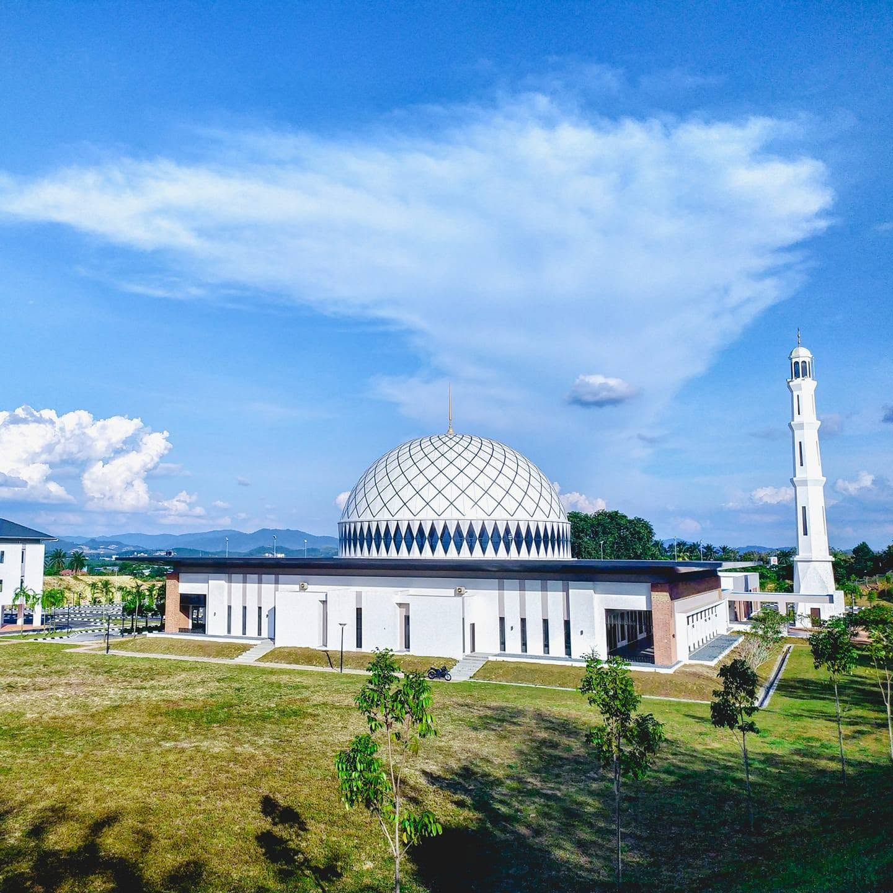

THE DIGITAL COLLECTION
Stories worth exploring.
Discover the mosque through film, accessible sign language storytelling, and an illustrated digital comic.

02 / ACCESSIBLE HERITAGE
Heritage in sign language.
Discover five architectural and heritage features of the mosque through sign language videos, available with English or Bahasa Melayu subtitles.
03 / ILLUSTRATED HERITAGE
Turn the page.
Read the illustrated heritage story of Haji Mohammad Yassin Mosque. Turn the pages to explore.
01 / 01
Drag or swipe the pages to turn · Use the arrows to navigate
CONTINUE THE JOURNEY